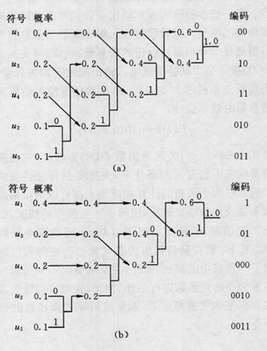

前言 原地排序：不需要额外的空间
100000规模的int型随机非负整数测试，使用C++标准库函数sort验证
名词
思想
最好
最坏
平均
测试
空间
稳定性
限制
冒泡排序
每次遍历排好一个元素
O(n)
O(n2 )
O(n2 )
35.849s
O(1)
稳定
数组
鸡尾酒排序
双向冒泡排序
O(n)
O(n2 )
O(n2 )
37.192s
O(1)
稳定
数组
梳排序
分组思想
O(n\log n)
Ω(n2 )
Ω(n2 / 2p )p = 增量
26.346s
O(1)
不稳定
数组
侏儒排序
遇到逆序序列就退步
Ω(n)
O(n2 )
O(n2 )
27.348s
O(1)
稳定
数组
快速排序
分治，先排再分
Θ(nlogn)
O(n2 )
Θ(nlogn)
0.167s
O(nlogn)
不稳定
不定
内省排序
混合快速和堆
Θ(nlogn)
Θ(nlogn))
Θ(nlogn)
0.168s
O(nlogn)
不稳定
不定
奇偶排序
奇数、偶数遍历
O(n)
Θ(n2
O(n2 )
31.899s
O(1)
稳定
数组
慢速排序
分治 + 递归
Ω(nlogn / (2 + c) )c > 0
Ω(nlogn / (2 + c) )c > 0
Ω(nlogn / (2 + c) )c > 0
…
O(1)
稳定
数组
臭皮匠排序
三等分思想
O(nlog 3 /log 1.5 )
O(nlog 3 /log 1.5 )
O(nlog 3 /log 1.5 )
…
O(1)
不稳定
数组
Bogo排序
全排列
O(n)
∞
O(n * n!)
…
O(n)
不稳定
数组
选择排序
每次选择一个最值
O(n2 )
O(n2 )
O(n2 )
15.384s
O(1)
不稳定
数组
堆排序
利用树形结构
O(nlogn)
O(nlogn)
Θ(nlogn)
0.235s
O(n)
不稳定
数组
插入排序
递归维护排序好的序列
O(n)
O(n2 )
O(n2 )
23.653s
O(1)
稳定
数组
科洛弗排序
双向插入排序
O(n)
O(n2 )
O(n2 )
42.281s
O(1)
稳定
数组
希尔排序
分组思想
O(n)
O(nlog2 n)
Θ(nlogn)
26.827s
O(1)
稳定
数组
图书馆排序
优化
O(n)
O(n2 )
O(nlogn)
35.823s
O(n)
稳定
数组
耐心排序
先优化为基本有序
O(n)
O(n2 )
O(nlogn)
24.375s
O(n)
稳定
数组
归并排序
分治，先分再排
Θ(nlogn)
Θ(nlogn)
Θ(nlogn)
0.243s
Θ(n)
稳定
数组
计数排序
遍历计数
O(n + k)
O(n + k)
O(n + k)
…
O(n + k)
稳定
正整数
桶排序
不完全计数排序
O(n)
O(nlogn)
O(n + k)k = N * (logN-logM)
0.6s
O(n + k)
稳定
数组
鸽巢排序
没优化额外空间的计数排序
O(n + k)
O(n + k)
O(n + k)
…
O(n + k)
稳定
正整数
基数排序
特殊的桶排序
O(nlog10 n)
O(nlog10 n)
O(nlog10 n)
0.176s
O(n + k)
稳定
整型
珠排序
特殊的计数排序
O(S)s为所有数据和
O(S)s为所有数据和
O(S)s为所有数据和
2.524s
O(k)k为最大值
不稳定
正整数
比较排序 交换排序 冒泡排序(Bubble Sort) 每次比较相邻元素，每次遍历排序好一个元素
1 2 3 4 5 for(int i = 0; i < len - 1; i++ ){ for(int j = 0; j < len - 1 - i; j++ ){ if(qus[j] > qus[j + 1]) swap(qus[j], qus[j + 1]); } }
鸡尾酒排序(Cocktail Sort) 双向冒泡排序
1 2 3 4 5 6 7 8 for(int i = 0; i < len / 2; i ++ ){ for(int j = 0; j < len - 1 - i; j++ ){ if(qus[j] > qus[j + 1]) swap(qus[j], qus[j + 1]); } for(int j = len - 2 - i; j > i; j--){ if(qus[j] < qus[j - 1]) swap(qus[j], qus[j - 1]); } }
梳排序(Comb Sort) 改良冒泡排序，分组思想
1 2 3 4 5 6 7 8 9 void Shell_sort(){ for(int i = len / 2; i > 0; i /= 2) for(int j = 0 ; j < i; j++) for(int k = j; k < len - i; k += i ) for(int l = j; l < len - k - i; l += i) if(qus[l] > qus[l + i]) swap(qus[l + i], qus[l]); }
侏儒排序(Stupid Sort) 遇到逆序序列就退步，不用嵌套
1 2 3 4 5 6 7 8 9 10 11 void gnome_sort(){ int pos = 0; while (pos < len) { if(pos == 0 || qus[pos] >= qus[pos - 1]) pos++; else swap(qus[pos], qus[pos - 1]), pos --; } }
快速排序(Quick Sort) 分支，先分再排
1 2 3 4 5 6 7 8 9 10 11 12 13 void quick_sort(int l, int r){ if(l >= r) return; int mid = (qus[l] + qus[r]) >> 1; int i = l - 1, j = r + 1; while (i < j) { while(qus[++i] < mid); while(qus[--j] > mid); if(i < j) swap(qus[i], qus[j]); } cout << i << endl << j; quick_sort(l, j), quick_sort(j + 1, r); }
内省排序(Intro Sort) 快速排序 + 堆排序，先使用快速排序当递归深度过深则在对应区间使用堆排序，STL sort
奇偶排序(Parity Sort) 适用多处理器环境，反复奇数和偶数遍历元素对排序
1 2 3 4 5 6 7 8 9 10 11 12 13 void Parity_sort(){ bool jud = false; while (!jud) { jud = true; for(int i = 1; i < len - 1; i += 2){ if(qus[i] > qus[i + 1]) swap(qus[i], qus[i + 1]), jud = false; } for(int i = 0; i < len - 1; i += 2){ if(qus[i] > qus[i + 1]) swap(qus[i], qus[i + 1]), jud = false; } } }
慢速排序(Slow Sort) 分治 + 递归
1 2 3 4 5 6 7 void slow_sort(int l, int r){ if(l >= r) return; int mid = (l + r) / 2; slow_sort(l, mid), slow_sort(mid + 1, r); if(qus[r] < qus[mid]) swap(qus[r], qus[mid]); slow_sort(l, r - 1); }
臭皮匠排序(Stooge Sort) 三等分思想，可见称球问题
1 2 3 4 5 6 7 8 9 void stoogeSort(int low, int high){ if(qus[low] > qus[high]) swap(qus[low], qus[high]); if(low + 1 >= high ) return; int split = (high - low + 1) / 3; stoogeSort(low, high - split); stoogeSort(low + split, high); stoogeSort(low, high - split); }
Bogo排序(Bogo Sort) 教育用排序，随机生成或枚举所有元素的排列，直到为排好序的序列
选择排序 选择排序(Selection Sort) 直观，每次选择一个最值
1 2 3 4 5 6 7 for(int i = 0; i < len - 1; i++ ){ int min_idx = i; for(int j = i + 1; j < len; j++ ){ if(qus[j] < qus[min_idx]) min_idx = j; } swap(qus[i], qus[min_idx]); }
堆排序(Heap Sort) 1 2 3 4 5 6 7 8 9 10 11 12 13 14 15 16 17 18 19 20 21 22 23 24 25 26 27 28 29 for(int i = 0; i < len ; i++ ){ h[++h_size] = qus[i]; heap_sort(h_size); } for(int i = 0; i < len; i++ ){ qus[i] = h[1]; h[1] = h[h_size]; h_size--; down(1); } void heap_sort(int pos){ while(pos / 2 && h[pos/2] > h[pos]) // 和父节点递归比较 { swap(h[pos/2] , h[pos]); pos /= 2; } } void down(int pos){ int f = pos; if(pos * 2 <= h_size && h[pos * 2] < h[f]) f = 2 * pos; if(pos * 2 + 1 <= h_size && h[pos * 2 + 1] < h[f]) f = 2 * pos + 1; if( f != pos ){ swap(h[pos], h[f]); down(f); } }
插入排序 插入排序(Insertion Sort) 递归维护排序好的序列
1 2 3 4 5 for(int i = 1; i < len; i++ ){ for(int j = 0; j < i; j++ ){ if(qus[j] > qus[i]) swap(qus[i], qus[j]); } }
科洛弗排序(Clover Sort) 双向插入排序
1 2 3 4 5 6 7 8 9 void clover_sort(){ for(int i = 1; i < len; i++ ){ for(int j = 0; j < i; j++ ){ if(qus[j] > qus[i]) swap(qus[i], qus[j]); if(qus[len - 1 - j] < qus[len - 1 - i]) swap(qus[len - 1 - j], qus[len - 1 - i]); } } }
希尔排序(Shell Sort) 分组思想
1 2 3 4 5 6 7 8 9 10 11 12 13 14 15 16 17 18 //简单版 void Shell_sort(){ for(int i = len / 2; i > 0; i /= 2) for(int j = 0 ; j < i; j++) for(int k = j + i; k < len; k += i ) for(int l = j; l < k ; l += i) if(qus[l] > qus[k]) swap(qus[k], qus[l]); } //简化版 void Shell_sort(){ for(int i = len / 2; i > 0; i /= 2){ for(int j = i ; j < len; j++){ for(int k = j; k >= i; k -= i) if(qus[k] < qus[k - i]) swap(qus[k], qus[k - i]); } } }
图书馆排序(Library Sort) 插入排序的变体，在每个元素间添加空位，可以直接插入，此处未用二分查找
1 2 3 4 5 6 7 8 9 10 11 12 13 14 15 16 17 18 19 20 21 22 23 24 25 26 27 28 29 30 31 32 33 34 35 void library_sort(){ int nul = 0x3f3f3f3f; vector<int> buf(3 * len, nul); for (int i = 0; i < len; i ++){ buf[i * 3] = qus[i]; } for(int i = 1; i < len * 3; i ++ ){ for(int j = i - 1; j >= 0; j-- ){ if(buf[i] == nul) break; if(buf[j] == nul) continue; if(buf[i] > buf[j]){ if(j == i - 1) break; for(int k = j + 1; k < i - 1; k ++ ){ swap(buf[k], buf[i]); if(buf[i] == nul) break; } break; } if(j == 0){ for(int k = 0; k < i; k ++ ){ swap(buf[k], buf[i]); if(buf[i] == nul) break; } break; } } } for(int i = 0, j = 0; i < len * 3; i ++ ){ if(buf[i] != nul) qus[j++] = buf[i]; } }
耐心排序(Patience Sort) 先调整为基本有序再进行排序，受纸牌游戏耐心的启发
1 2 3 4 5 6 7 8 9 10 11 12 13 14 15 16 17 18 19 20 21 22 23 24 25 26 27 28 29 30 31 32 void patience_sort(){ vector<stack<int>> buf; for(int i = 0; i < len; i ++ ){ bool jud = false; for(int j = 0; j < buf.size(); j++ ){ if(qus[i] < buf[j].top()){ buf[j].push(qus[i]); jud = true; break; } } if(!jud) { stack<int> tmp; tmp.push(qus[i]); buf.push_back(tmp); } } for(int j = 0, i = 0; j < buf.size(); j++ ){ while (buf[j].size()) { qus[i] = buf[j].top(); buf[j].pop(); } } for(int i = 1; i < len; i++ ){ for(int j = 0; j < i; j++ ){ if(qus[j] > qus[i]) swap(qus[i], qus[j]); } } }
归并排序 归并排序(Merge Sort) 分治的思想
1 2 3 4 5 6 7 8 9 10 11 12 13 14 15 void sort_define(int l, int r){ if(l >= r) return; int mid = (l + r) / 2; sort_define(l, mid), sort_define(mid + 1, r); int i = l, j = mid + 1, k = 0; for(; i != mid + 1 && j != r + 1 ;){ if(qus[i] <= qus[j]) buf[k++] = qus[i++]; else buf[k++] = qus[j++]; } while(i != mid + 1) buf[k++] = qus[i++]; while(j != r + 1) buf[k++] = qus[j++]; for(i = l, k = 0;i <= r; i++ ){ qus[i] = buf[k++]; } }
线性时间排序 分布排序 计数排序(Counting Sort) 知道小于x值的值个数，就能判断出x的位置
1 2 3 4 5 6 7 8 9 10 11 12 13 14 15 16 17 18 19 20 21 22 23 24 25 26 27 28 29 30 31 32 33 34 35 36 37 38 39 40 41 42 43 44 //不稳定 void count_sort(){ int max = qus[0], min = qus[0]; for(auto x : qus){ if(x > max) max = x; if(x < min) min = x; } vector<int> count(max - min + 1, 0); //额外空间 for(int i = 0; i < len; i ++ ){ count[qus[i] - min]++; } int index = 0; for(int i = 0; i < count.size(); i ++ ) for(int cnt = 0; cnt < count[i]; cnt ++) qus[index++] = i + min; } //稳定 vector<int> count_sort(){ int max = qus[0], min = qus[0]; for(auto x : qus){ if(x > max) max = x; if(x < min) min = x; } vector<int> count(max - min + 1, 0); //额外空间 for(int i = 0; i < len; i ++ ){ count[qus[i] - min]++; } for(int i = 1; i < len; i ++ ){ count[i] += count[i - 1]; } vector<int> buf(len, 0); //额外空间 for(int i = len - 1; i >= 0; i--){ buf[count[qus[i] - min]-1] = qus[i]; count[qus[i] - min] --; } return buf; }
桶排序(Bucket Sort) 元素分到有限的桶，每个桶再分别排序，计数排序 + 分治
1 2 3 4 5 6 7 8 9 10 11 12 13 14 15 16 17 18 //按范围分桶，稳定 void bucketsort(int range) { vector<int> buckets[range]; for(int elem : qus) buckets[elem / range].push_back(elem); for(int i = 0; i < range; i++ ) for(int j = 0; j < buckets[i].size() - 1; j++ ) for(int k = 0; k < buckets[i].size() - 1 - j; k++ ) if(buckets[i][k] > buckets[i][k + 1]) swap(buckets[i][k], buckets[i][k + 1]); int index = 0; for(int i = 0; i < range; i++ ){ for(int j = 0; j < buckets[i].size(); j++ ){ qus[index++] = buckets[i][j]; } } }
鸽巢排序(Pigeonhole Sort) 实际上就等于计数排序，只是辅助数组范围0 ~ max
1 2 3 4 5 6 7 8 9 10 11 12 //不稳定 void pigeonhole_sort() { vector<int> auxiliary(max, 0); for(int i = 0; i < len; ++i) auxiliary[qus[i]]++; for(int i = 0, j = 0; i < NUM; ++i) for(int k = 0; k < auxiliary[i]; ++k) array[j++] = i; } //稳定见计数排序
基数排序(Base Sort) 相当于特殊的桶排序
1 2 3 4 5 6 7 8 9 10 11 12 13 14 15 16 //按基数分桶 void bucketsort(vector<int>& arr) { queue<int> buckets[10]; //额外空间 for (int digit = 1; digit <= 1e9; digit *= 10) { for (int elem : arr) { buckets[(elem / digit) % 10].push(elem); } int idx = 0; for (queue<int>& bucket : buckets) { while (!bucket.empty()) { arr[idx++] = bucket.front(); bucket.pop(); } } } }
珠排序(Bead Sort) 对应算盘，难以在计算机中实现。共N（最大的数）个竖直杆，每一个数对应本数值个珠子。
1 2 3 4 5 6 7 8 9 10 11 12 13 14 15 16 17 18 19 20 21 22 23 24 25 26 void bead_sort(){ int max = qus[0]; for(int i = 0; i < len; i ++) if(qus[i] > max) max = qus[i]; vector<int> buf(max, 0); for(int i = 0; i < len; i ++){ for(int j = 0; j < qus[i]; j++) { buf[j]++; } } for(int i = 0; i < len; i++ ){ int tmp = 0; for(int j = 0; j < max; j++ ){ if(buf[j]){ tmp++; buf[j]--; } else{ break; } } qus[len - 1- i] = tmp; } }
启发式排序 煎饼排序 蛮力法：每一次将最小值或最大值翻到顶，再翻到底
拓扑排序 位于右边的节点没有指向左边节点的路径，用于各节点间的依赖关系。
DFS
减治
哈夫曼树 最优二叉树，带权路径长度最短的树，权值较大的结点离根较近，常用于最佳编码(Huffman Coding 哈夫曼编码)

1 2 3 4 5 6 7 8 9 10 11 12 13 14 15 16 17 18 19 20 21 22 23 24 25 26 27 28 29 30 31 32 33 34 35 36 37 38 39 40 41 42 #include<bits/stdc++.h> using namespace std; priority_queue<pair<int, string>, vector<pair<int, string>> , greater<pair<int, string>>> qus; map<char, string> path; int main(){ int n; cin >> n; for(int i = 0; i < n; i++ ){ char buf1; int buf2; cin >> buf1 >> buf2; string buf3 = ""; buf3.push_back(buf1); qus.push({buf2, buf3}); path[buf1] = ""; } while (qus.size() > 1) { auto buf1 = qus.top(); qus.pop(); for(int i = 0; i < buf1.second.size(); i++) { path[buf1.second[i]].push_back('0'); } auto buf2 = qus.top(); qus.pop(); for(int i = 0; i < buf2.second.size(); i++) { path[buf2.second[i]].push_back('1'); } qus.push({buf1.first + buf2.first, buf1.second + buf2.second}); //cout << buf1.second << " " << buf2.second << endl; } for(map<char, string>::iterator it = path.begin(); it != path.end(); it ++){ cout << it->first << ":" << it->second << endl; } return 0; }
总结 许多算法还可以优化，还是STL的sort函数最快